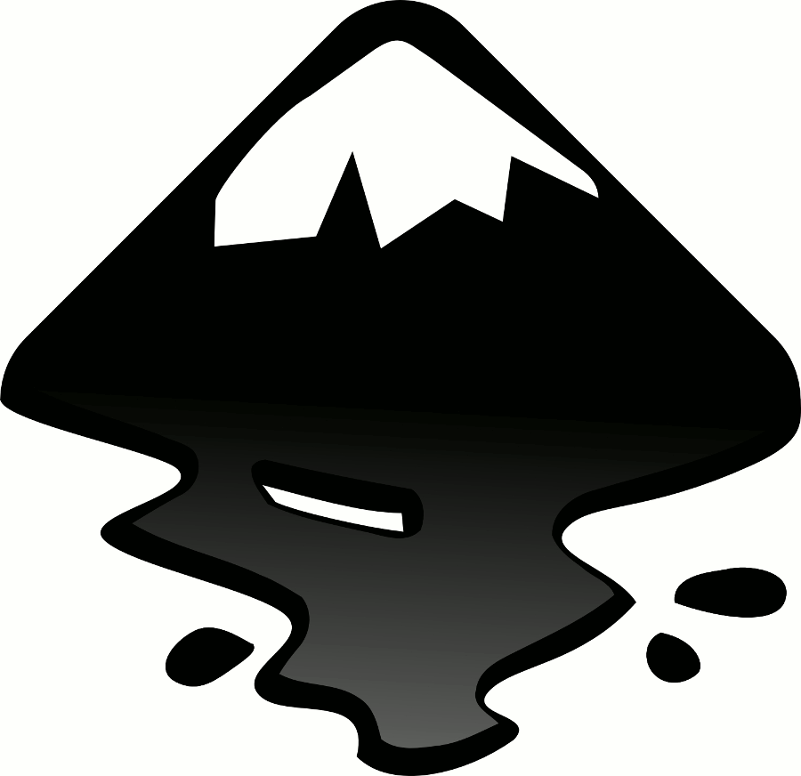
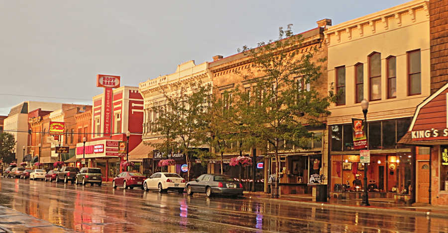
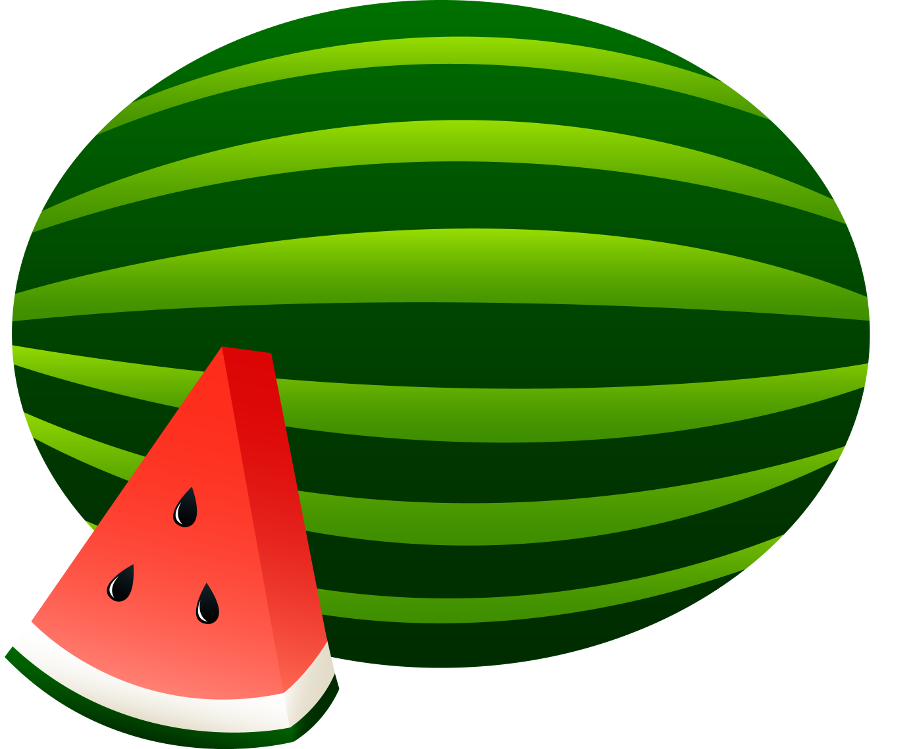

Here are the six I chose:
I chose the .png version of this picture, because it's considerably smaller than the other two and the same or around the same quality.

I chose the .png version again, because it was a bit smaller than the other two. The .jpg version seemed to handle the gradient a bit better, but was larger, and I didn't think the slight banding on the other two from cutting back their color channels was going to be too much of a concern given the size I planned to display it, so I went with the smallest one.
I chose the .png again, because it was the same or near identical quality to the other two but significantly smaller.

This time I chose the .jpg, because it was not only better quality than the other two but also a lot smaller.
I chose the .jpg, because it handled all the colors and blending best and was also the smallest size of the three.

This one was a bit hard to pick. Even though the .png was the largest of the files, I ended up choosing it because it allows the file to have a transparent background and good quality of its blended areas, so had the best integrity towards the original file.